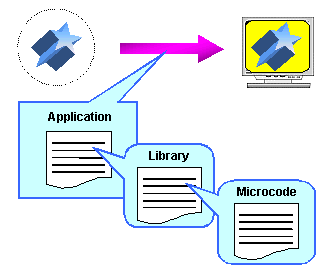

The software process is illustrated here:

Graphics microcode, transferred from RDRAM to the RSP, performs image transformations in the RSP.
Graphics library functions interpret the image data, create the display list, and transfer the display list to RSP in the RCP.
The game application itself sets up the RCP and controls the image drawing process by specifying such things as image placement and special effects.
Nintendo® Confidential
Copyright © 1999
Nintendo of America Inc. All Rights Reserved
Nintendo and N64 are registered trademarks of Nintendo
Last Updated March, 1999